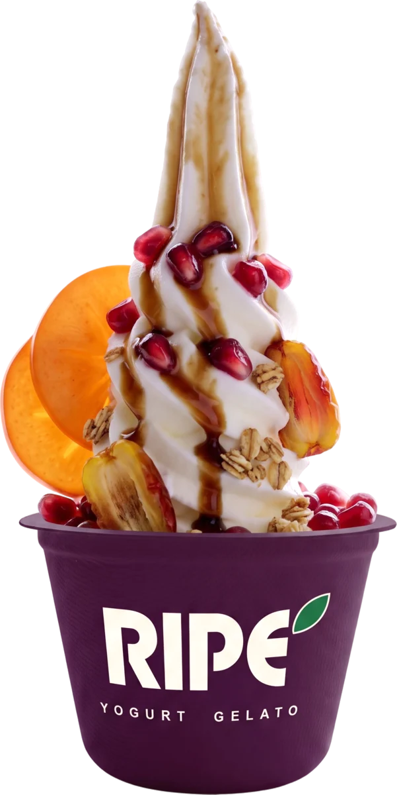
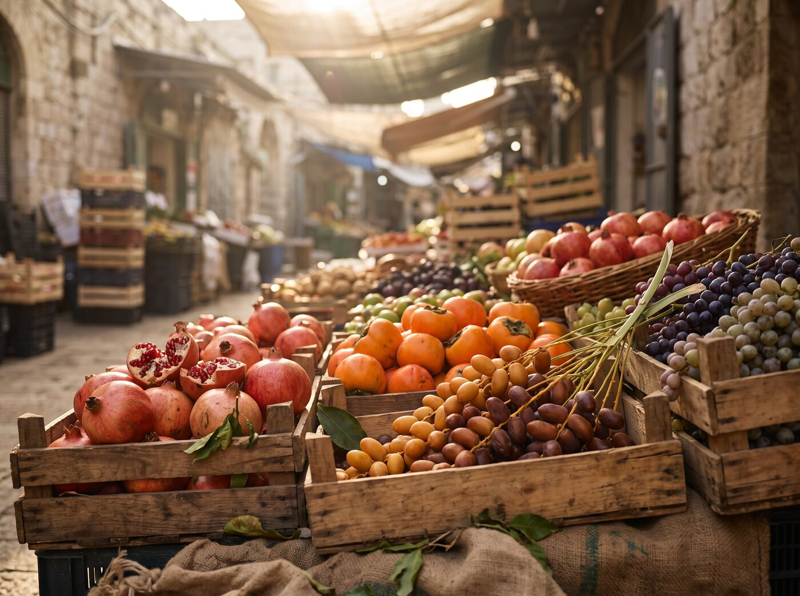
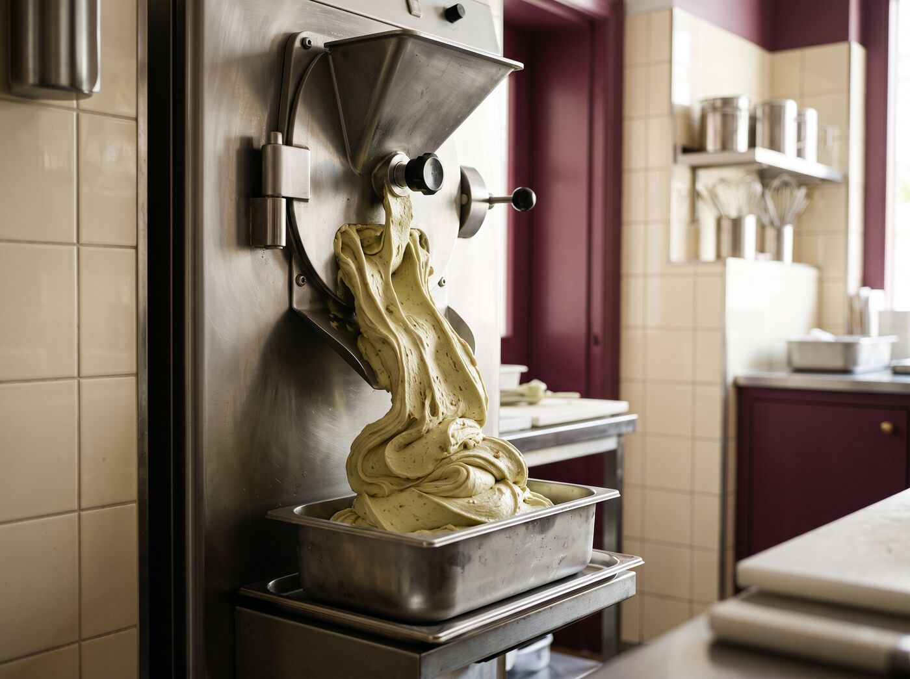
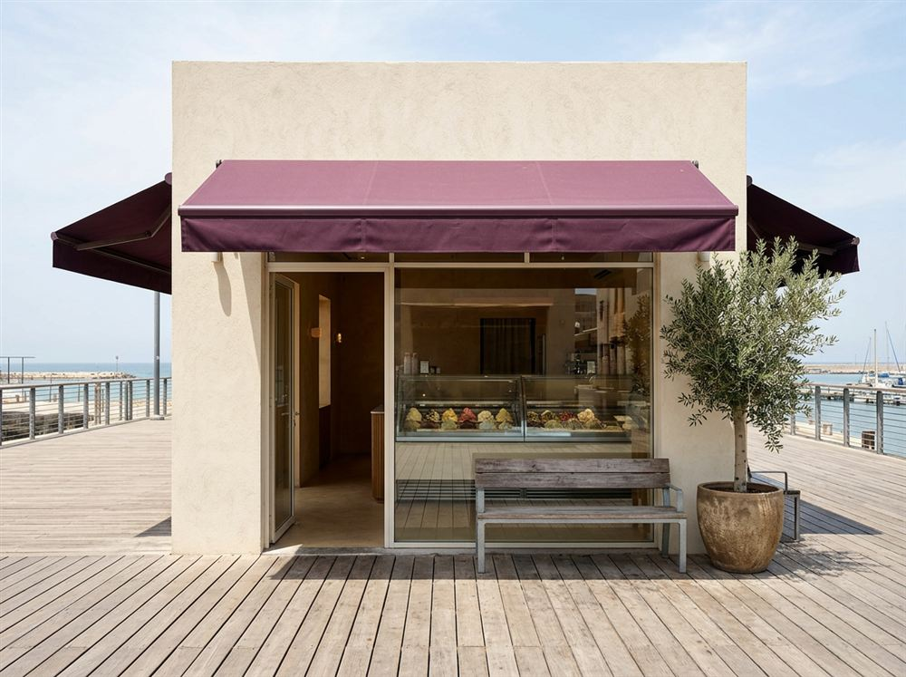

פרי של עונה
רק מה שבשל עכשיו. כשהעונה נגמרת, הפרי יוצא מהתפריט וחוזר בשנה הבאה.
Ripe זה "בשל" באנגלית, וזה כל הרעיון: פרי שנקטף בשיא שלו, חומרי גלם שאנחנו בוחרים בעצמנו, וגלידה שמכינים כל בוקר מחדש.


לפני הסניף הראשון היה רק דוכן פירות ושאלה אחת: למה היוגורט בכל מקום מגיע עם פרי קפוא מהשקית? התחלנו לקנות כל בוקר את מה שבשל באותו שבוע, ולבנות את התפריט סביבו.

המטבח שלנו מתחיל לעבוד לפני שהסניפים נפתחים. כל טעם נעשה במנות קטנות, מחלב טרי שהגיע באותו בוקר, ונגמר באותו יום. מה שלא נמכר לא חוזר למקרר.

תל אביב, הרצליה וירושלים. בכל סניף אותם טעמים, ואותו פרי של עכשיו שמגיע כל בוקר מהחקלאים. החלום: RIPE בכל עיר, בלי לוותר על הבוקר בשוק.
אנחנו לא קונים בסיס מוכן. כל רכיב מרכזי נבחר אצל ספק שאנחנו מכירים בשם.
רק מה שבשל עכשיו. כשהעונה נגמרת, הפרי יוצא מהתפריט וחוזר בשנה הבאה.
כל טעם נעשה באותו בוקר, במנות קטנות. אין גלידה של אתמול.
בלי צבעי מאכל מלאכותיים ובלי תמציות. הצבע של המנטה בא מנענע.